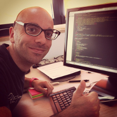
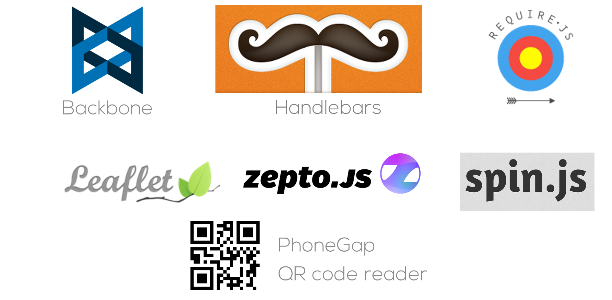
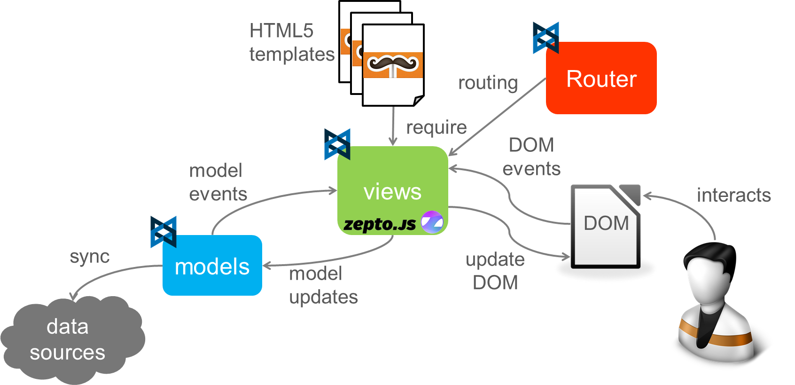

time.zip
Developing an Android-iOS, smartphone-tablet app in one month

Ivano Malavolta
Research fellow @ University of L'Aquila
Alessio D'Arielli
Graphic Designer and Web developer
Roadmap
The app
Organizational best practices
Technical best practices
The
App
Presentazione App
Presentazione App
Presentazione App
Presentazione App
Presentazione App
Organize
them
all
1. Debug contract before the code

2. Web-based feasibility

3. Balance efforts

Equally divide the workload, responsibilities and testing. Notify quickly to colleagues about bugs.
4. Use code repositories

Using repository for remote collaboration (SVN, git, etc.). Rather than email or other methods that have no chance to undo.
5. Start less things, complete more

6. Use MVC pattern

7. Modularity

Maximum simplification of navigation and extreme modularity so any changes to the content or presentation are feasible in a short time without affecting the overall structure.
8. Be reactive

9. Organize revisions with customers

Keep customer updated about the status of development organising meetings at the reach of some checkpoints, in order to collect a list of tasks or corrections to be made.
10. Get all testing tools

Book many hours for testing (and blasphemy),
get as soon as you can all devices needed for the platforms required.
Summary
Debug contract before the code
Web-based feasibility
Balance efforts
Use code repositories
Start less things, complete more
Use MVC pattern
Modularity
Be reactive
Organize revisions with customers
Get all testing tools
Technical
Best
Practices
1. First day: search and test already developed components

require.config({
paths: {
jquery: '../lib/jquery/jquery-1.9.1.min', /* '../lib/jquery/zepto', */
underscore: '../lib/underscore/underscore-min',
backbone: "../lib/backbone/backbone",
text: '../lib/require/text-1.0.6',
async: '../lib/require/async',
handlebars: '../lib/handlebars/handlebars',
templates: '../templates',
leaflet: '../lib/leaflet/leaflet',
datamanager: 'datamanager',
spin: '../lib/spin/spin'
},
shim: {
'jquery': {
exports: '$'
},
'underscore': {
exports: '_'
},
'backbone': {
deps: ['jquery', 'underscore'],
exports: 'Backbone'
},
'handlebars': {
exports: 'Handlebars'
},
'leaflet': {
exports: 'L'
}
}
});
Once you are done, setup your boilerplate app
2. Establish the software architecture from the beginning
It will guide the structure of your code
var EnteView = Backbone.View.extend({
model: Ente,
initialize: function () {
this.title = this.model.get("titolo");
},
var EventoView = Backbone.View.extend({
model: Evento,
/**/
initialize: function () {
var date = new Date(this.model.get("timestamp") * 1000);
var gg, mm, aaaa, hours, mins;
gg = date.getDate() + "/";
mm = date.getMonth() + 1 + "/";
aaaa = date.getFullYear();
hours = date.getHours();
mins = date.getMinutes();
this.title = gg + mm + aaaa + " - " + hours + ":" + mins;
/**/
},
3. Define your own coding patterns*
*more patterns will show up during the presentation
Clearly separate concerns

It makes the code more testable
More easy to extend and refine the app
It allowed us to follow a micro-process
from JS developer's perspective...
I commit this
after update I see this
Example (home view)
define([..., "text!templates/frascatiscienza.html"], /* dependency to template file */
function ($, _, Backbone, Handlebars, Ente, template) { /* template contains a string now */
var FrascatiScienzaView = Backbone.View.extend({
model: Ente,
className: "default_wrapper",
events: {
"touchstart #enti": "enti",
"touchstart #_eventi": "eventi",
"touchstart #partner": "partner",
"touchstart #frascati": "continua"
},
template: Handlebars.compile(template), /* template compilation, it is a function now */
render: function () {
// gestione nav bar
this.updateNavbar();
$(this.el).html(this.template(this.model.toJSON())); /* template execution */
/* */
return this;
}
});
return FrascatiScienzaView;
});
4. Keep performance in mind from the beginning
- Avoid to fall into the fancy-framework trap
- Use pure JS as much as you can
- Use native touch events, not onClick (300ms delay)
- No JS animation, just switch classes + CSS3 transitions/transforms
- Minimize browser reflows
- Avoid complex CSS selectors
- Try to use id-only selectors
- ...
5. Views first, then data
Valid especially when data is coming from the network
var AppRouter = Backbone.Router.extend({
/* */
changePage: function (page) {
if (this.currentView) {
this.currentView.trigger("removed");
this.currentView.remove();
}
this.currentView = page;
this.structureView.currentView = page;
page.render();
this.structureView.$el.find("#content").append($(page.el));
this.structureView.trigger("updateTitle", page);
this.currentView.trigger("inTheDom"); // here the new view can fetch data
return true;
}
/* */
6. Let the user forget he is looking at a browser
@charset "UTF-8";
/* STANDARD FOR MOBILE */
* {
/* transparent link selection */
-webkit-tap-highlight-color: rgba(0,0,0,0);
}
body {
-webkit-touch-callout: none; /* no callouts during tap and hold */
-webkit-text-size-adjust: none; /* no fonts auto inflation */
-webkit-user-select: none; /* no copy and paste, etc. */
background-attachment: fixed;
font-family: 'HelveticaNeue-Light', 'HelveticaNeue', Helvetica, Arial, sans-serif;
height: 100%;
margin: 0px;
padding: 0px;
width: 100%;
}
#mainContainer { /* get the whole display */
position: absolute;
height: 100%;
width: 100%;
margin: 0px;
padding: 0px;
left: 0;
top: 0;
}
.scrollable {
-webkit-overflow-scrolling: touch; /* native scrolling */
}
7. Minimize network access
// We launch the App
require(['underscore', 'backbone', 'spin', 'router', 'datamanager'],
function (_, Backbone, Spinner, AppRouter, Data) {
String.prototype.endsWith = function (suffix) {
return this.indexOf(suffix, this.length - suffix.length) !== -1;
};
String.prototype.strip = function () {
return this.replace(/(<([^>]+)>)/ig, "").replace(/(<([^>]+)>)/ig, "");
};
document.addEventListener("deviceready", run, false);
function run() {
Data.initialize();
/* */
}
});
Try to prefetch data as much as possible
If some data is always the same, bundle it into the app
When testing, bypass network access by using data mockups
8. Take special care of images
- Avoid to resize images (both via CSS and JS)
- Be robust w.r.t. 404 errors
/* in the template */
 /* in your JS */
function ImgError(source){
empty1x1png = "iVBORw0KGgoAAAANSUhEUgAAAAEAAAABCAQAAAC1HAwCAAAAC0lEQVQI12NgYAAAAAMAASDVlMcAAAAASUVORK5CYII=";
source.src = "data:image/png;base64," + empty1x1png;
source.onerror = "";
return true;
}
/* in your JS */
function ImgError(source){
empty1x1png = "iVBORw0KGgoAAAANSUhEUgAAAAEAAAABCAQAAAC1HAwCAAAAC0lEQVQI12NgYAAAAAMAASDVlMcAAAAASUVORK5CYII=";
source.src = "data:image/png;base64," + empty1x1png;
source.onerror = "";
return true;
}
.heavyImg {
background: url('../res/loader.gif') no-repeat;
background-position: center;
min-height: 20%;
width: 100%;
}
9. When it's simple, leave it simple
Don't overelaborate. Complexity will come by itself.
goBack: function (self) {
var that = (self instanceof StructureView) ? self : this;
if (!that.currentView) {
return false;
}
if (that.currentView instanceof IntroTappaView) {
return false;
}
if (that.currentView instanceof DomandaCacciaView) {
return false;
}
if (that.currentView instanceof RisultatoCacciaView) {
Backbone.history.navigate("introcaccia", {trigger: true});
return false;
}
if (that.currentView instanceof FineCacciaView) {
Backbone.history.navigate("caccia", {trigger: true});
return false;
}
window.history.back();
}
ANTIPATTERN ABOVE
10. Test, debug, test, debug
In this context, the browser is the killer app!
- Check console
- Breakpoints
- Update the DOM at run-time
- Access to all local DBs
- Network profiling
- CPU and memory profiling
- Monitor event listeners
- Monitor elements’ rendering time
Here is MY testing process
- Code & test in the Desktop browser
- Run in the simulator & test in the Desktop browser
- Run on the device & debug in the Desktop browser
Either by using Chrome or PG-Emulator
Very handy & accurate
Complete control & confidence
Summary
First day: search and test already developed components
Establish the software architecture from the beginning
Clearly separate concerns
Keep performance in mind from the beginning
Views first, then data
Let the user forget he is looking at a browser
Minimize network access
Take special care of images
When it's simple, leave it simple
Test, debug, test, debug
Bonus
An RSS reader in 20 lines of pure JavaScript ;)
define(["jquery", "underscore", "backbone", "models/Rss"],
function ($, _, Backbone, Rss) {
var RssList = Backbone.Collection.extend({
model: Rss,
populate: function (feedUrl, view) {
var xmlhttp = new XMLHttpRequest();
var self = this;
xmlhttp.onreadystatechange = function () {
if (xmlhttp.readyState == 4 && xmlhttp.status == 200) {
var feed = xmlhttp.responseXML;
var news = feed.getElementsByTagName("item");
var title, description, link;
for (var i = 0; i news.length; i++) {
title = news[i].getElementsByTagName("title")[0].textContent.strip();
description = news[i].getElementsByTagName("description")[0].textContent.strip();
link = news[i].getElementsByTagName("link")[0].textContent.strip();
if (title && description && link) {
self.create({
title: title,
description: description,
link: link
});
}
}
view.showNews(self);
}
}
xmlhttp.open("GET", feedUrl, true);
xmlhttp.send();
}
});
return RssList;
});
Conclusions
- We extracted a set of organizational and technical best practices from a true story
- In any case, step zero to success is to be technologically ready
- for example, many people tend to underestimate JavaScript, don't!